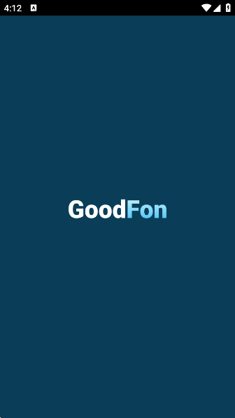
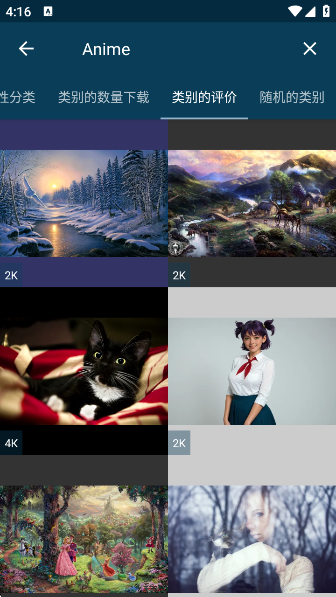

GoodFon 壁纸 App 入门指南——从零开始把手机桌面玩出花
第一次用 GoodFon 不知道怎么找图、怎么换壁纸、怎么保存？这篇从下载安装到上手玩法一步步带你搞定，五分钟就能把手机桌面彻底刷新。
这篇能带你从完全不懂 GoodFon 到把它用起来，不需要任何基础——跟着做就行。
它到底是干嘛的？一个生活化类比
想象一下，你朋友圈里有个专门收集好看图片的朋友，而且他不是随便收——他从世界各地收集，从星云到极光、从极简线条到二次元插画，每张都挑过。然后他还帮你分好了类、打上了标签、排好了名次。你想要什么风格随口说一句，他立刻能掏出几张你大概率会喜欢的。
GoodFon 就是这个朋友——一个超大规模的壁纸库 App，里面存了海量的手机和桌面壁纸，覆盖几乎你能想到的所有风格。它的核心价值很简单：帮你在几分钟之内，把手机上那张用了三个月的默认壁纸换掉，而且换得满意。
为什么不直接去浏览器搜？因为 GoodFon 做了三件搜不到的事：一是图片质量统一筛选过，不会有糊的、有黑边的、分辨率不对的；二是分类和标签体系很完善，找图比搜索引擎精准得多；三是 App 本身很轻，不弹广告、不偷偷跑后台，装了之后基本忘了它的存在，但每次想换壁纸时它就在那里。
五分钟上手——从下载安装到第一次换壁纸
第一次打开 GoodFon，你大概率会觉得"这不就是一屏图片吗？"。别急，跟着下面的步骤走，五分钟之内你手机上的壁纸就会换成你真正喜欢的。
第一步：下载和安装
GoodFon 在 iOS 和 Android 都有对应的版本，直接去应用商店搜就能找到。如果你习惯从别的渠道下载安装包，也可以从官方下载拿，最新的版本在GoodFon官网上也能查到。安装过程和普通 App 一样，点同意、点安装、点完成，没什么好说的。
第二步：打开 App，逛逛首页
打开之后，你会看到首页自动铺满了壁纸——这些是 GoodFon 帮你挑出来的热门内容。屏幕上方有几个分类标签，比如「风景」「极简」「太空」「抽象」之类的，点任何一个就能进入对应的分类浏览。

这里有个小技巧：首页默认是按下载量排序的，也就是被最多人下载的壁纸。如果你觉得热门不一定适合自己，可以点一下顶部的排序按钮（图标像个箭头或者筛选器），切换成随机排序试试——随机出来的结果往往会跳出"大众审美"的框，给你惊喜。
第三步：挑一张你觉得好看的
随便点一张壁纸进入详情页。你会看到大图预览、下载按钮、收藏按钮（一个心形图标），还有一个"设置为壁纸"的按钮。别纠结选哪张——新手阶段挑第一眼看上的那张就行，后面随时可以换。
第四步：设为壁纸，搞定
点"设置为壁纸"，系统会弹出选择框让你选是当主屏壁纸、锁屏壁纸还是两者都用。选好之后确认，等两秒钟——你的手机桌面已经彻底换了一张脸。
五分钟，完成。你现在可以对着手机屏幕好好看看这张新壁纸，是不是感觉手机都精神了一些？
上手之后，先玩这三个功能
第一次换完壁纸别急着关 App，下面三个功能是 GoodFon 真正值得长期用的原因，新手阶段玩一遍基本就懂它的核心玩法了。
功能一：收藏夹——把喜欢的图存起来慢慢挑
看到喜欢的壁纸时，点一下那个心形图标就能收藏。收藏之后它会被存进你的个人收藏夹，随时可以回来翻。
你可能会问：为什么不直接下载？因为下载到相册的图片会越来越多，而收藏夹更像是一个"候选池"——你今天收藏十张，明天收藏五张，攒个几十张之后坐下来慢慢挑，选最合心意的那张下载设为壁纸。
如果你在 iPhone 上收藏了一批图，然后打开电脑浏览器访问 GoodFon 网页版，登录同一个账号，收藏夹里那些图会自动同步过去。这个跨平台同步是 GoodFon 很实用的一个设计——通勤路上在手机上刷、上班时在电脑上继续整理，收藏数据两边走。
功能二：标签搜索——精准找到你想要的风格
浏览分类是"逛"的体验，标签搜索就是"定向找"的体验。比如你特别喜欢太空主题的壁纸，可以在搜索框输入 "space" 或者 "宇宙"，GoodFon 会把所有带这些标签的壁纸列出来。
太空主题的壁纸在 GoodFon 上特别受欢迎——星云的斑斓色彩、银河的宏伟结构、土星环的经典画面，几乎每张都能当高质量桌面。而且太空壁纸有个天然优势：深色太空背景和白色 App 图标对比清晰，桌面看起来干净又有内容。
如果你喜欢某一张太空壁纸，可以往下滑到相似推荐区，GoodFon 会自动给你推送同主题的其他作品，往往一翻就是好几个小时。
功能三：随机换壁纸——让手机每天都有新面孔
这个功能可能是 GoodFon 最"懒人"的玩法。开启自动换壁纸之后，它会按你设定的时间间隔（比如每天一次、每小时一次），从你的收藏夹里随机抽一张设为壁纸。
想象一下：早上打开手机是一片星云，中午换成极光，晚上又变成一张极简的几何图——不是你懒得自己换，是手机自己在给你"换心情"。

自动换壁纸的电池消耗极低，因为它用的是系统级的定时触发，不是持续后台跑。设置里可以调整间隔、限定只在 Wi-Fi 下执行，还有个 G-Shake 功能——摇一下手机立刻换一张，觉得不好再摇一下，特别适合打发碎片时间。更多自动换壁纸的进阶设置可以在GoodFon文档里找到。
新手常见的三个疑问
疑问一：下载的壁纸占空间吗？
这个问题问得很实际。Full HD 的壁纸平均 3 到 5 MB 一张，4K 的大概 8 到 15 MB，8K 的可能更大。主流手机 128GB 起步的存储，下载几十张完全没问题。但如果你攒了几百张，还是建议定期在相册里清理一下——毕竟真正占空间的是你下载到相册的文件，不是 GoodFon App 本身（安装包才六七十 MB）。
缓存也可以在 App 设置里手动清理，清理之后收藏夹和已下载的壁纸文件都不会丢，只是清除一些浏览过的缩略图和临时数据。
疑问二：不登录账号能用吗？
完全可以。不登录的话，收藏夹就只存在你当前这台设备上，不能跨设备同步而已。如果你只有一台手机，不登录也没关系，功能上没任何阉割。但如果你有 iPhone + Android + 电脑三套设备，花两分钟注册一个账号，同步体验的提升会让你觉得这两分钟花得值。
疑问三：怎么快速发现新壁纸？
GoodFon 有三种排序方式可以帮你发现：按下载量（最保险，不会踩雷）、按评分（高口碑但不一定热门）、按随机（最有惊喜感）。新手阶段建议先从下载量排序逛起，收藏几张大众公认的好图打底，然后切到随机，看看能不能跳出舒适区发现一些意外的好货。
写在最后
GoodFon 不是那种让你玩一整天的 App，它的定位就是"每次打开五分钟，换一张壁纸就走"。但恰恰是这种"轻"，让它可以常驻在你的手机上而不成为负担。
入门阶段先把上面三个功能玩透，接下来你想深挖的话，可以试试收藏夹的自动换壁纸配合多个风格的混搭——比如太空壁纸和极简壁纸放在同一个收藏夹里，让手机在深色和浅色之间随机切换，说不定会比你固定用某一张壁纸更耐看。
最后提一句：这套资料我放在了三个仓库方便不同地区访问——GitHub上的原始版本、Gitee的国内镜像、GitCode的另一路备份，想看哪份都行。